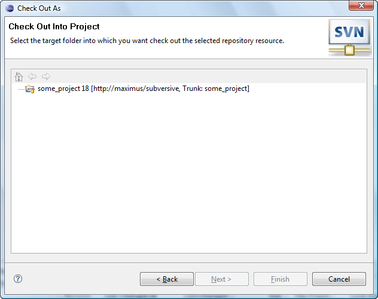
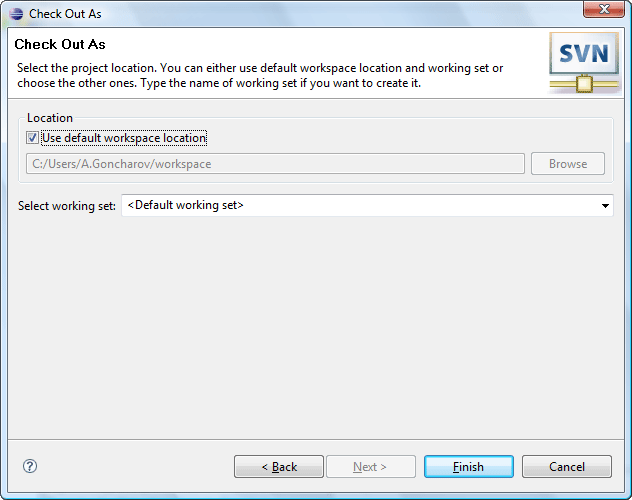

|
|
|
 'SVN Find/Check Out As Wizard' appears when the user clicks on 'Find/Check Out As...' menu item in the pop-up menu of the remote resource in the 'Repository View' or while importing a project using 'Project from SVN' method. If the repository isn't chosen the choosing repository dialog will appear:
'SVN Find/Check Out As Wizard' appears when the user clicks on 'Find/Check Out As...' menu item in the pop-up menu of the remote resource in the 'Repository View' or while importing a project using 'Project from SVN' method. If the repository isn't chosen the choosing repository dialog will appear:
The first page of this wizard offers the user to choose a checkout method.
| Option | Description | Default |
| Checkout recursively | Specifies if the Subversion® should checkout the sub items and subtrees of selected resource. | Enabled |
'Checkout as a folder into existent project' was chosen:
The second page allows the user to choose the project the folder must be checked out to.
'Checkout as a project with a name specified' was chosen:
The second page allows the user to choose the working set and workspace location.
